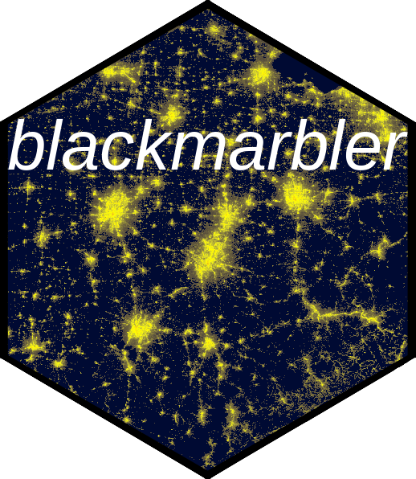

Download VIIRS Satellite Image in HDF5 Format
Source:R/blackmarble_utils.R
download_h5_viirs_sat_image.RdDownloads a VIIRS satellite image in HDF5 format from NASA's LADSWeb and saves it to a temporary directory or persistent location.
Usage
download_h5_viirs_sat_image(
file_name,
temp_dir,
bearer,
quality_flags_to_remove = numeric(),
quiet = FALSE
)Arguments
- file_name
A character string representing the name of the file to download.
- temp_dir
A character string specifying the temporary directory where the file will be saved.
- bearer
A character string containing the authorization token for accessing NASA's LADSWeb.
- quality_flags_to_remove
A numeric vector containing quality flag values to be removed from the data (optional).
- quiet
Logical; indicating whether to suppress progress messages (default: FALSE).